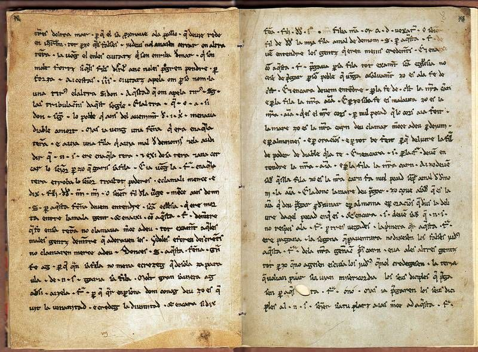
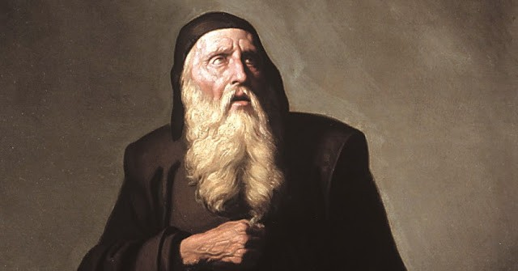
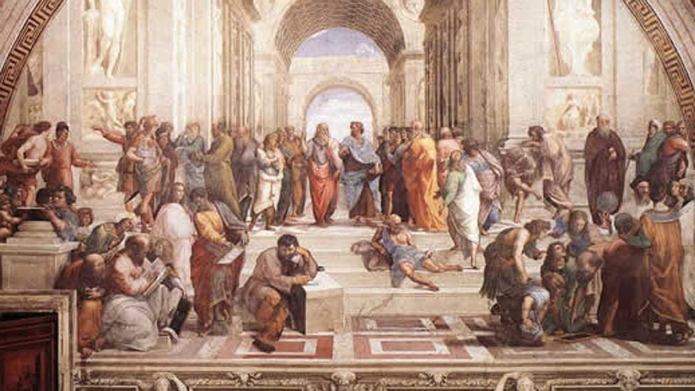
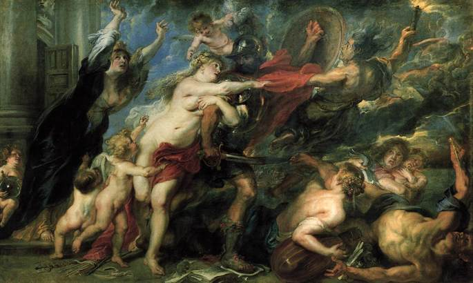
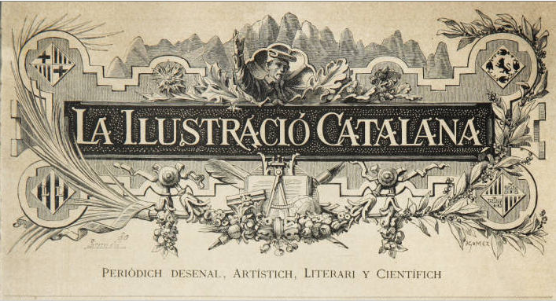

Un recorregut històric pels fonaments i l'evolució de les
lletres catalanes.
Segle XII
Homilies d'Organyà

Considerades el primer text literari escrit íntegrament en llengua catalana. Es tracta
d'una col·lecció de sermons destinats a explicar els Evangelis al poble en la seva llengua
vulgar, trobades a la rectoria d'Organyà.
Primer testimoni de prosa literària catalana.
Descobriment històric a l'església de Santa Maria d'Organyà.
Funció didàctica: sermó llatí explicat en català.
Context de transició del llatí cap a la llengua autòctona.
Segles XIII - XV
Edat Medieval

L'època de màxima esplendor amb el sorgiment de la koiné literària i les grans
cròniques. Ramon Llull estableix les bases de la prosa filosòfica i científica, mentre que
Ausiàs March revoluciona la poesia.
Ramon Llull: primer escriptor que usa el català per a la filosofia.
Les quatre grans Cròniques (Jaume I, Desclot, Muntaner, el Cerimoniós).
Ausiàs March: trencament amb la tradició trobadoresca i poesia personal.
Tirant lo Blanc: considerada la primera novel·la moderna europea.
Segle XVI
Renaixement

Arriba la influència de l'humanisme italià, posant l'ésser humà al centre de tot.
Malgrat la pressió del castellà a la cort, es produeix una literatura culta que busca l'equilibri
i la raó clàssica.
Pere Serafí: introducció del sonet i el madrigal renaixentista.
Cristòfol Despuig i els "Col·loquis de la insigne ciutat de Tortosa".
Erasmisme: corrent crític que defensa una religiositat interior.
Joan Timoneda i la valoració de la poesia popular i tradicional.
Segle XVII
Barroc

Un període marcat pel pessimisme, el desengany i una estètica recarregada i
artificiosa. La vida és vista com un somni i la mort esdevé l'única certesa absoluta del moment
històric.
Francesc Vicent Garcia: el cèlebre Rector de Vallfogona.
Estil artificiós amb contrastos de llum, ombra, bellesa i lletjor.
"Vallfogonisme": fenomen d'imitació de l'obra de Garcia.
Temàtica del memento mori i la brevetat de la vida.
Segle XVIII - XIX (Inici)
Decadència
Conseqüència directa dels Decrets de Nova Planta (1716), que prohibeixen l'ensenyament
i l'ús oficial del català. La llengua sobreviu gràcies a les classes populars i la
tradició oral.
Decrets de Nova Planta: pèrdua de l'oficialitat del català.
Joan Ramis: la tragèdia neoclàssica "Lucrècia" escrita a Menorca.
Literatura de canya i cordill: plecs solts venuts al carrer.
Il·lustració: Baldiri Reixac i les "Instruccions per a minyons".
Mitjan Segle XIX
Renaixença

Moviment cultural i nacional que busca recuperar el prestigi literari del català. El
Romanticisme impulsa la recerca de les arrels medievals i la identitat pròpia del país.
Bonaventura Carles Aribau i l'oda "La pàtria" (1833).
Jacint Verdaguer: el gran poeta de "Canigó" i "L'Atlàntida".
Restauració dels Jocs Florals el 1859 sota el lema "Pàtria, Fe i Amor".
Àngel Guimerà i el ressorgiment del teatre i el drama català.